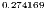
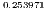
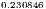
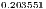
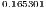
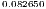
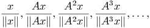

Consideremos uma matriz  diagonalizável, isto é, existe um conjunto  de autovetores de  tais que qualquer elemento  pode ser escrito como uma combinação linear dos . Sejam  o conjunto de autovalores associados aos autovetores tal que um deles seja dominante, ou seja,
|
| (4.26) |
O método da potência permite o cálculo do autovetor dominante com base no comportamento assintótico (i.e. "no infinito") da sequência
Por questões de convergência, consideramos a seguinte sequência semelhante à anterior, porém normalizada:
 , temos
, temos
|
| (4.27) |
Como a norma de  é igual a um, temos


Observe que um múltiplo de autovetor também é um autovetor e, portanto,

 .
.
Uma vez que temos o autovetor de  , podemos calcular
, podemos calcular  da seguinte
forma:
da seguinte
forma:
 |
Observe que a última identidade é válida, pois  por construção.
por construção.
E 4.7.1. Calcule o autovalor dominante e o autovetor associado da matriz

Resposta.  associado ao autovetor dado por
associado ao autovetor dado por ![v1 = [0.65968 0.66834 0.34372]T](main2561x.png) .
.

E 4.7.2. Calcule o autovalor dominante e o autovetor associado da matriz

![T
x = [1 1]](main2564x.png)
E 4.7.3. A norma  de um matriz
de um matriz  é dada pela raiz quadrada do
autovalor dominante da matriz
é dada pela raiz quadrada do
autovalor dominante da matriz  , isto é:
, isto é:

 da seguinte matriz:
da seguinte matriz:

Resposta. 

E 4.7.4. Os autovalores de uma matriz triangular são os elementos da diagonal principal. Verifique o método da potência aplicada à seguinte matriz:

>>>>>> 4e9787bf4bba34ce830980dc83a8fe1bee8ad2ee
id="tailmainse21.html">
=======